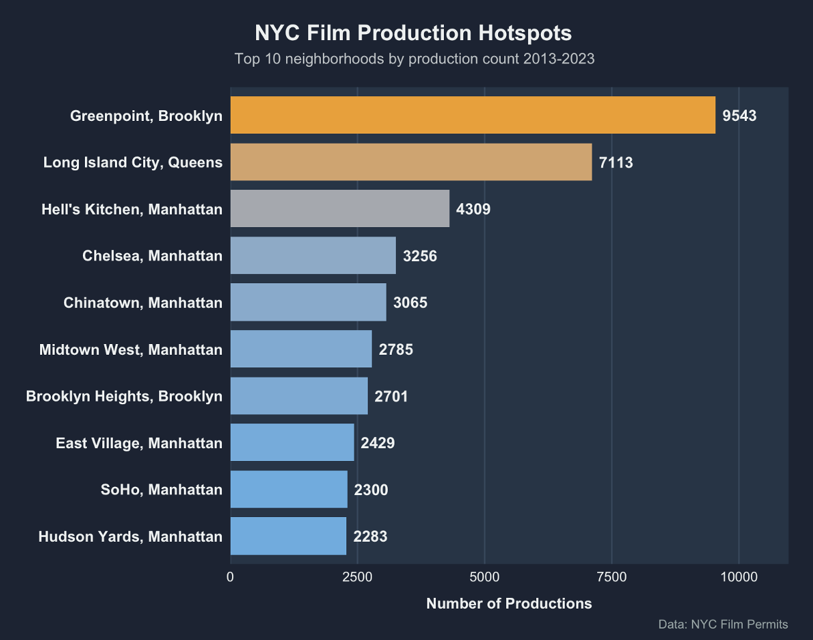
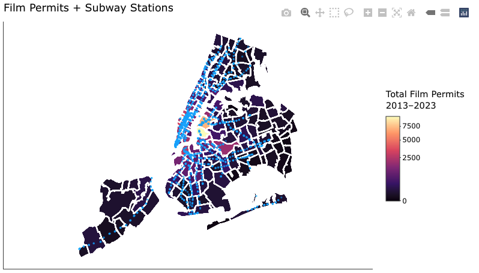

Does film production activity act as an early signal — or even a catalyst — for rising real estate values in New York City neighborhoods?
Introduction & Motivation
New York City has long been one of the most filmed urban environments in the world, serving as a backdrop for films, television series, commercials, and streaming productions. These creative activities are more than just entertainment—they require real, physical locations, reflecting choices about aesthetic appeal, accessibility, neighborhood character, and cultural value. At the same time, New York’s real estate market is constantly evolving, shaped by economic forces, demographic transitions, redevelopment efforts, and cultural influences. This raises a compelling question: Does film activity serve as an early signal or catalyst for neighborhood-level change? In other words, do film crews show up before a neighborhood becomes more desirable, or do they follow development that has already taken place?
This project examines the relationship between film production activity—measured by film permits issued by the Mayor’s Office of Media and Entertainment (MOME)—and real estate indicators such as annualized housing prices and regional income trends. Drawing on over a decade of New York City data, spanning 2013 to 2023, we explore spatial patterns in film permit distribution, analyze underlying social and economic correlates, and evaluate whether filming serves as a measurable indicator of real estate transformation.
Our overarching question: Does film production activity act as an early signal — or even a catalyst — for rising real estate values in New York City neighborhoods? is to determine whether film activity is merely a reflection of neighborhood desirability or whether it provides predictive value for understanding or forecasting shifts in local real estate markets.
Data Sources and Methods
Data Sources
Film Permit Data
Annualized Housing Sales Data
Supplemental Socioeconomic Data (Income and Rent)
Analytical Approach
Our methodological strategy includes:
Spatial descriptive analysis: mapping and identifying film hotspots.
Temporal trend analysis: assessing year-over-year changes in film activity.
Correlation and regression: evaluating the association between film permits, income, and housing prices.
Cluster analysis: interpreting patterns in scenic, historic, transit-rich, and redeveloped neighborhoods.
Key Findings
Spatial and Temporal Patterns of Film Production - View Paul’s individual report here
QUESTION: Which neighborhoods consistently host productions, and which are rarely filmed? And how these hotspots shifted over time?
Approved film permits showed steady growth from 2013 through 2019. This trajectory was halted in 2020 when the COVID-19 pandemic shut down productions citywide. The industry rebounded in 2021 and 2022, though film permit counts did not fully recover to pre-pandemic levels. Data for 2023 reflects the impact of the SAG-AFTRA strike, which halted productions for nearly six months, resulting in significantly lower permit counts.
The distribution of film production across NYC zip codes is highly skewed. Manhattan accounts for the largest share of permits, followed by Brooklyn and Queens. The Bronx and Staten Island consistently host far fewer productions. The top decile of zip codes accounts for a disproportionate share of total permits, indicating that production activity is geographically concentrated rather than evenly distributed across the city.
 Greenpoint, Brooklyn, stands out as the city’s most prominent filming hotspot, averaging over 900 annual productions and exhibiting positive growth over time. Long Island City ranks second but shows slight decline. Many traditionally popular Manhattan neighborhoods—including Hell’s Kitchen, Midtown West, and Chelsea—have experienced significant declines in filming activity. This shift indicates a broader migration of production away from Manhattan toward Brooklyn and parts of Queens.
Greenpoint, Brooklyn, stands out as the city’s most prominent filming hotspot, averaging over 900 annual productions and exhibiting positive growth over time. Long Island City ranks second but shows slight decline. Many traditionally popular Manhattan neighborhoods—including Hell’s Kitchen, Midtown West, and Chelsea—have experienced significant declines in filming activity. This shift indicates a broader migration of production away from Manhattan toward Brooklyn and parts of Queens.
Despite these shifts, filming hotspots are remarkably stable. In most years, 80–90% of the top 10 ZIP codes remain the same, even during periods of disruption such as the pandemic. This stability suggests that once neighborhoods become established filming locations, they tend to retain that status. Overall, while there is some movement year-to-year, NYC’s top filming hotspots are largely entrenched. 
Clustering Around Transit, Scenic Architecture, and Redevelopment - View Yongqiang’s individual report here
QUESTION: Do filming hotspots cluster around transit, scenic architecture, or recently redeveloped areas?
Film production activity in New York City consistently clusters within neighborhoods that combine scenic appeal, transit accessibility, and recent redevelopment. This pattern is not coincidental. When location teams select filming environments, they prioritize visually compelling streetscapes, distinctive architecture, and areas that feel uniquely “New York.” Scenic neighborhoods like DUMBO, Brooklyn Heights, and the West Village offer historic brownstones, waterfront views, cobblestone streets, and dramatic skyline backdrops. These features are not only aesthetically desirable but also highly recognizable to national and international audiences. As a result, scenic areas become visually coded as cinematic spaces, reinforcing their cultural significance and drawing repeated filming activity.
 Transit accessibility is also important. Filming requires the movement of large crews, heavy equipment, and time-sensitive logistics. Neighborhoods with dense subway coverage—such as Midtown, lower Manhattan and Long Island City, reduce transportation costs and provide reliable access for staff and vendors. This reliability makes transit-rich areas natural filming hubs, even if they are not the most scenic. Location managers often balance aesthetic considerations with logistical feasibility, and transit access often tips the scale toward certain ZIP codes over others.
Redeveloped or rapidly gentrifying areas form a third major cluster. Neighborhoods such as DUMBO/Brooklyn Heights(11201), Long Island City (11101), and Green Points (11222) have experienced substantial economic investment and cultural transformation over the past decade. These areas offer modern infrastructure, flexible public spaces, and new architectural styles that lend themselves to contemporary storytelling. As these neighborhoods evolve, filming becomes a way of visually documenting and broadcasting their transformation. In many cases, film crews arrive early in the redevelopment cycle, signaling the area’s growing appeal and cultural momentum.
Taken together, these factors form a reinforcing feedback loop: accessible and scenic neighborhoods attract filming; filming increases visibility; visibility enhances desirability; and desirability accelerates redevelopment. The clustering of film activity in scenic, transit-rich, and redeveloped neighborhoods highlights how cultural production reflects and sometimes amplifies the urban hierarchies underlying New York City’s real estate landscape.
Housing Prices, Income and Economic Context - View Yu Yang’s individual report here
QUESTION: How well does film activity perform as a predictor, compared to traditional factors like income?
To evaluate whether film production activity provides meaningful insight into housing market changes, my contribution focuses on preparing and analyzing New York City housing data and integrating it with income and rent measures to establish this economic baseline.
I cleaned property NYC sales data between 2013 and 2023. The original data consisted of transaction-level records that varied across years in structure and formatting. To better capture neighborhood-level trends while reducing volatility from individual transactions, housing prices were aggregated to the ZIP–year level, producing average and median sale prices for each location over time.
To place housing prices in their broader economic context, I integrated supplemental data from the American Community Survey, including median household income and median monthly rent. All observations were restricted to ZIP codes within New York City and aligned across the same time period to ensure consistency across datasets.
Then I created visualizations examining the relationship between housing prices and traditional economic indicators. Scatterplots comparing housing prices with income and rent across boroughs revealed clear positive relationships, though with considerable variation across neighborhoods. In some boroughs, higher income or rent levels were associated with higher housing prices, while in others the relationship appeared weaker or more dispersed. These patterns suggest that while economic indicators play an important role, they do not fully explain observed housing price differences across the city.
To quantify these relationships, I estimated multiple linear regression models using median household income, median rent, and borough indicators as baseline predictors of housing prices. These models provide a benchmark for evaluating predictive performance, showing that traditional economic factors explain a meaningful but incomplete share of housing price variation.
This economic and housing framework directly supports my SQ. By establishing how much variation is already explained by traditional economic measures, this contribution helps position film production activity as a potential contextual or early signal of neighborhood change, rather than an isolated or purely causal factor. The results underscore the importance of interpreting film activity patterns alongside broader economic conditions when assessing their relationship to housing markets.
Film Permit Density’s Correlation to Housing Price and Rent Growth - View Ethan’s individual report here
QUESTION: Do neighborhoods with higher film permit density experience faster housing price or rent growth?
One of the correlations we consider is the relationship between film permit density in different ZIP codes and whether there is an effect on housing pricing or rental growth in the following years. This assessment can show how the filming can influence the real estate value of the area that filming takes place. My contribution works with the data prepared by my colleagues and manipulating their data sets to see if there is a significant correlation between film permit density and pricing increases.

We begin with New York City Property Sales data, film permits data, and rental data from 2013 to 2023. The New York Property Sales data is individual property sales, film permit data is individual permits, and rental data is the average monthly rent for each zipcode. These are all tied to their given ZIP code and the date of either the sale, permit approval, or rental year. These data sets were combined using their ZIP codes and year after being standardized. For our question, we needed to isolate certain metrics; we need the year, ZIP code, permits per ZIP code, average sale price per ZIP code, and annual rent for the ZIP code each year. That is where I went to manipulate and create columns that brought out this data to observe for our question. As we are looking at growth over time based on the factor of permit density, we had to create another metric that would look back at our data to which we created a price growth and rental growth column that looked at a lagged annual rent and average sale price to evaluate the year over year growth. Now that we have all the data organized, we visualize the data in a scatter plot for each while taking out some outliers to try and get a better picture of the correlation between film density and the growth in both metrics. We find that the rental growth and property sale value is rather normalized and there doesn’t seem to be a strong correlation between specific densities and the growth they attain in the following years.

When approaching the question from a logical perspective, this is totally reasonable because the filming process in most cases are not attractions for most locals other than those that may be viewed already as high tourist or highly valued areas due to their popularity. Especially for rent, it is unlikely that these activities in the neighborhood are catalysts for rental value in these cases.
Equity and Exclusion in Filming Activity - View Santiago’s individual report here
QUESTION: Are certain communities systematically left out of filming?
To analyze the question, we linked data on film permits issued across New York City with information about the income levels of neighborhoods. Each ZIP code in the city has a median household income from the U.S. Census, and we used this to understand whether filming happens more often in wealthier or poorer areas.
We looked at how many filming permits ZIP codes received over a decade and compared that with their income levels. What we found is clear: filming activity is more common in higher-income neighborhoods than in lower-income ones.
When ZIP codes are grouped into income categories — for example, below $50,000 in yearly household income, $50–75k, $75–100k, and so on — the data show a pattern. All income groups have at least some filming activity, but the average number of filming permits per year is substantially higher in wealthier ZIP codes. Lower-income ZIP codes tend to receive fewer permits overall. This pattern holds citywide. Statistical tests also confirm that the relationship between income and filming intensity is meaningful. A correlation test shows a positive and statistically significant connection between a ZIP code’s median income and how frequently filming permits are issued there. This means that, on average, as neighborhood income goes up, the amount of filming in that area also goes up.
In practical terms, this suggests that lower-income communities are under-represented in filming activity relative to higher-income communities. While there are always exceptions, and filming does occur across all boroughs, wealthier neighborhoods tend to have both more frequent filming and more total permits over time.
Even though across all five boroughs, higher-income ZIP codes are generally more likely to host filming and to do so more frequently, the strength of this pattern varies. Manhattan and Brooklyn show the clearest income-based disparities, while Queens shows a weaker relationship and the Bronx and Staten Island experience low filming activity overall. Taken together, the borough-level evidence reinforces the conclusion that lower-income communities are systematically underrepresented in New York City’s filming landscape, even though the degree of exclusion differs by borough. This has implications not just for the cultural visibility of these neighborhoods, but also for the economic opportunities that filming can bring to local residents and businesses.
Conclusion
This project finds that film production activity in New York City functions primarily as an early signal of neighborhood desirability rather than a direct catalyst of real estate change. Filming clusters in scenic, transit-accessible, and redeveloped neighborhoods, reflecting underlying economic and cultural dynamics. While modest associations exist between film activity and housing outcomes, these relationships are weaker than those involving income and rent.
Importantly, filming patterns reveal persistent inequalities, with lower-income neighborhoods systematically underrepresented. These findings suggest that while film production reflects urban change, it also risks reinforcing existing spatial hierarchies.
For policymakers, filming data may serve as a valuable contextual indicator for anticipating neighborhood change. Incentives aimed at expanding filming into underrepresented areas could promote more equitable distribution of cultural and economic benefits. Future research should apply causal methods to better disentangle whether filming ever accelerates change or merely signals it.
References
- Film Permit Data
https://raw.githubusercontent.com/NewYorkCityCouncil/film_industry_hearing/refs/heads/master/permits.csv https://raw.githubusercontent.com/ppiatkow55/STA9750-2025-FALL/refs/heads/main/docs/Film_Permits_20251105.csv https://raw.githubusercontent.com/NewYorkCityCouncil/film_industry_hearing/refs/heads/master/permits_mar23.csv
- Property Sales Data
https://www.nyc.gov/assets/finance/downloads/pdf/rolling_sales/annualized-sales
- U.S. Census Bureau. (2024). American Community Survey 5-Year Estimates. https://www.census.gov/programs-surveys/acs